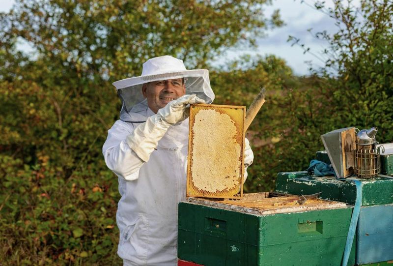
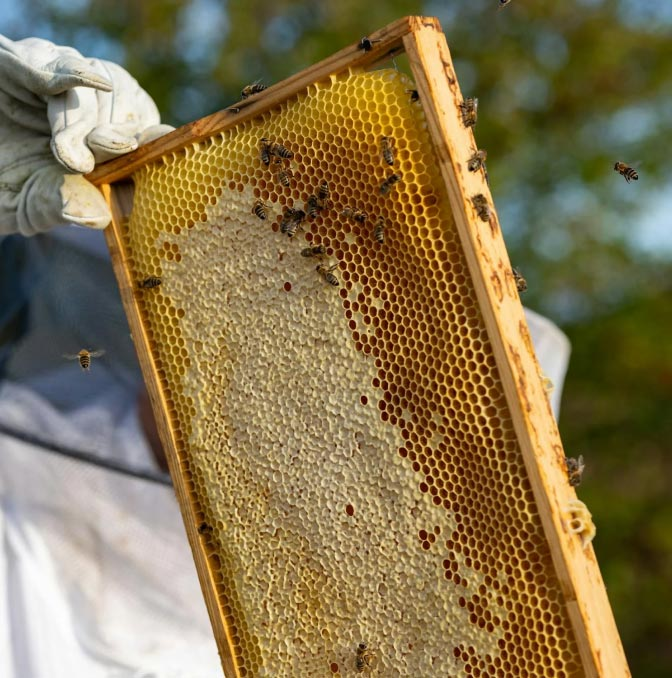

THE PROCESS 01 / 05
Beekeeper Registration
Local beekeepers who pride themselves on producing pure, ethical honey through sustainable beekeeping practices join our BeeSustain platform and get their hives verified.
Verification ensures the apiary’s location, honey origin, and quality, enabling beekeepers to receive fair compensation and secure a consistent monthly income.

